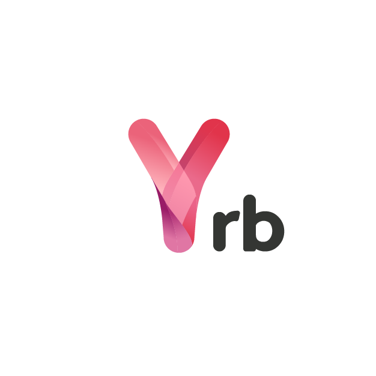

yrb
Ruby bindings for yrs ("wires")
Yrb is a Ruby binding for Y-CRDT. It provides distributed data types that enable real-time collaboration between devices. Yrb can sync data with any other platform that has a Y-CRDT binding, allowing for seamless cross-domain communication.
The library is a thin wrapper around Yrs, taking advantage of the safety and performance of Rust.
Installation
Add this line to your application's Gemfile:
gem 'y-rb'
And then execute:
$ bundle install
Or install it yourself as:
$ gem install y-rb
Required RubyGems version
If you want to use y-rb on x86_64-linux-musl systems, you most likely need
to update your system RubyGems due to a
bug in RubyGems < 3.3.21. For
older RubyGems versions, the platform is described as x86_64-linux-musl, but
x86_64-linux is fetched instead.
gem update --system
Usage
# creates a new document and text structure
local = Y::Doc.new
local_text = local.get_text("my text")
# add some data to the text structure
local_text << "hello"
# create a remote document sharing the same text structure
remote = Y::Doc.new
remote_text = remote.get_text("my text")
# retrieve the current state of the remote document
remote_state = remote.state
# create an update for the remote document based on the current
# state of the remote document
update = local.diff(remote_state)
# apply update to remote document
remote.sync(update)
puts remote_text.to_s == local_text.to_s # true
More examples.
Development
Make sure you have cargo available (2021 edition). The gem needs the lib to
be built every time when there is a change.
cargo build --release
After checking out the repo, run bin/setup to install dependencies. Then,
run rake spec to run the tests. You can also run bin/console for an
interactive prompt that will allow you to experiment.
To install this gem onto your local machine, run bundle exec rake install.
To release a new version, update the version number in version.rb, and then
run bundle exec rake release, which will create a git tag for the version,
push git commits and the created tag, and push the .gem file to
rubygems.org.
Docs
You can run yard locally and open the docs with:
yard server
open "http://0.0.0.0:8808/"
Decision log
For this gem, we maintain a decision log. Please consult it
in case there is some ambiguity in terms of why certain implementation details
look as they are.
License
The gem is available as open source under the terms of the MIT License.